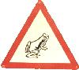

Home Page
The following are links to my personal space.
In this space you can find links to a variety of personal pages and some
pretty cool sites too. All images on the personal pages are copyright
to me or the Hunterian Museum, so don't use the images without permission!
If you would like to obtain copies of the images, please e-mail me at the
following address:- nclark@museum.gla.ac.uk
I have other more recent pages at another location. http://www.hmag.gla.ac.uk/neil
Fossiling pages:- This includes images from field excursions, fossil images, information on fossil hunting and collecting in Scotland (including details on relevant publications and a bit on restrictions), and some information on myself.
Dinosaur projects at the Hunterian Museum.....
Cool sites:- These are a collection of palaeontological and museum-related sites I have found useful....AND... Check here for new courses available also.
A list of museums containing fossil mollusk collections can be found at http://www.inhs.uiuc.edu/cbd/main/misc/museum_list.html
Scanned images from the back-up catalogues are added on request. These include Type and figured specimens as well as other associated specimens.
The pages are given the first catalogue number on the page and there are 29 specimens per page. The pages may be difficult to read, but you may be able to get an idea of some of the collections available at the Hunterian Museum.
Smaller collections have been written into a summary list of the collections rather than scanned images of the pages. If you are a bona fide researcher enquiring about material relating to your studies I will try and put information on material from our collections on to my web pages,
please email me at: nclark@museum.gla.ac.ukThese pages were constructed using WebWeaver 5.0. If you
want to find out more on the WebWeaver, you can access the
WebWeaver Home Page!
Please visit the Hunterian Museum. Scotland's first public museum opened in 1807 that is based on the collections of William Hunter, physician to the Queen in the late 1700's.
You can also find out more about the University of Glasgow if you want.